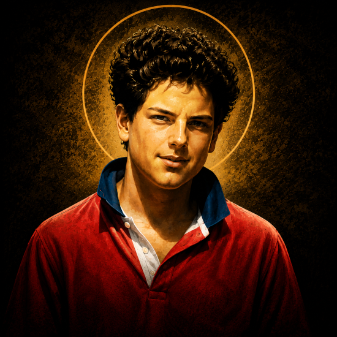

"To live as an original, not a photocopy."
"My secret is to contact Jesus every day."
Carlo Acutis — daily Mass, from age seven onward
Days after Carlo's funeral, his mother Antonia woke to a voice saying "Testament." Searching his room, she found nothing written — but on his computer, the instrument he used most, she discovered a short video he had filmed alone three months earlier. He looked calmly at the sky and named the exact weight he would be when he died. He was.
150+ miracles cataloged by country and date, in nearly 20 languages, with maps and a virtual museum.
miracolieucaristici.org EXHIBITIONA worldwide catalog of Church-recognized apparitions of Our Lady, the companion project to his Eucharistic site.
themarianapparitions.org OFFICIALHis official archive — timeline, phrases, tomb, and materials for parishes wanting to host his exhibitions.
carloacutis.comThe Virgin Mary is the only woman in my life.
on devotion to marySadness is the gaze turned toward oneself; happiness is the gaze turned toward God.
on conversionThe Eucharist is my highway to Heaven.
on the eucharistAll people are born originals, but many die as photocopies.
on living authentically